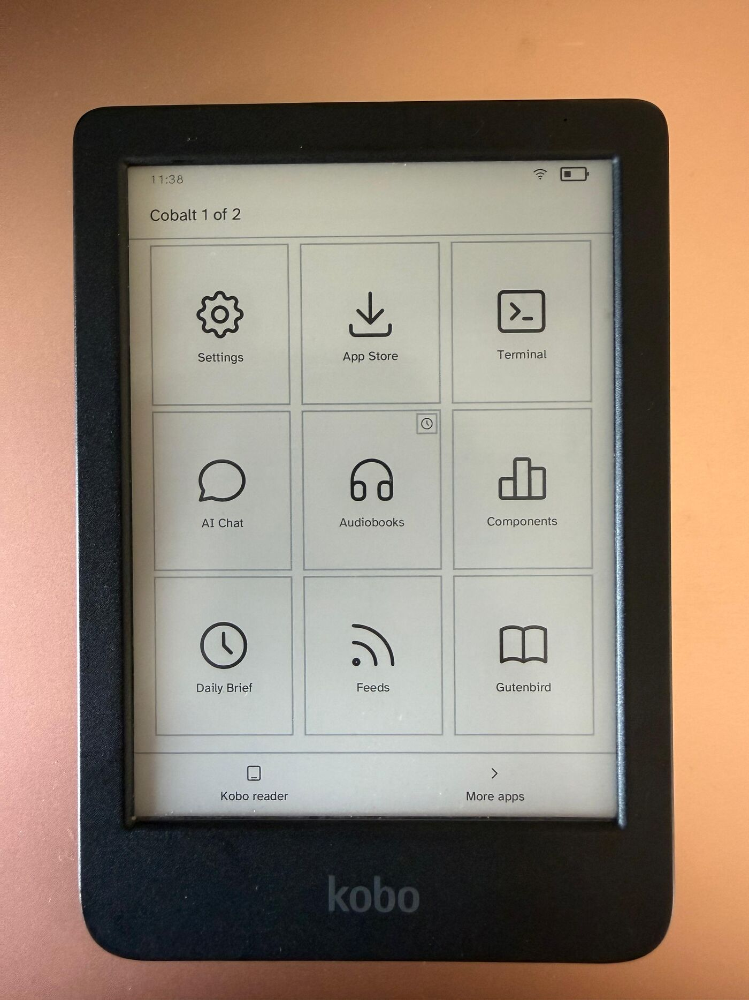
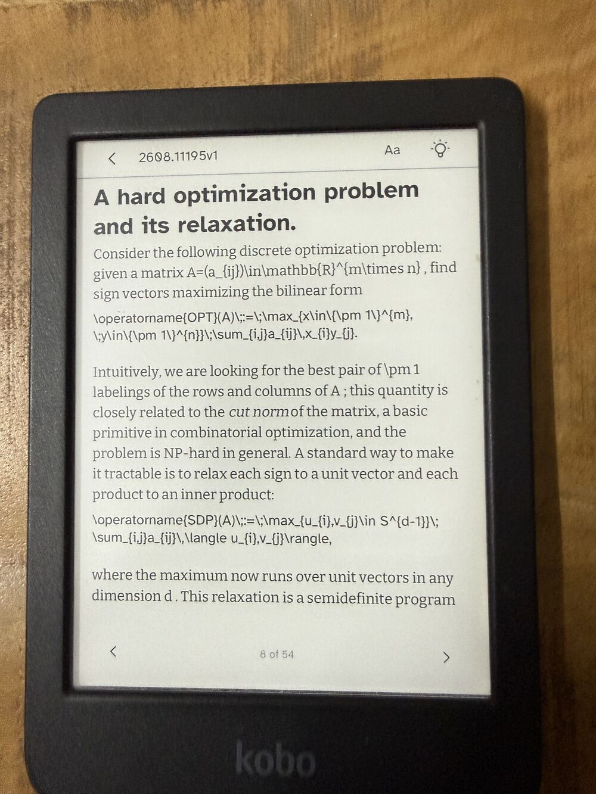
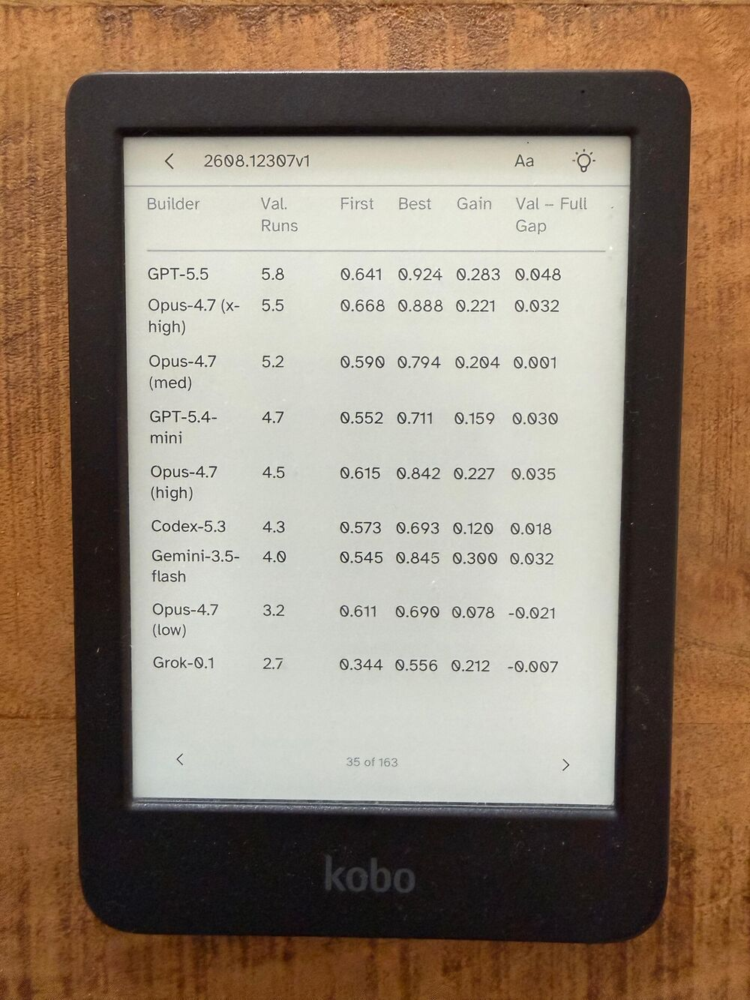
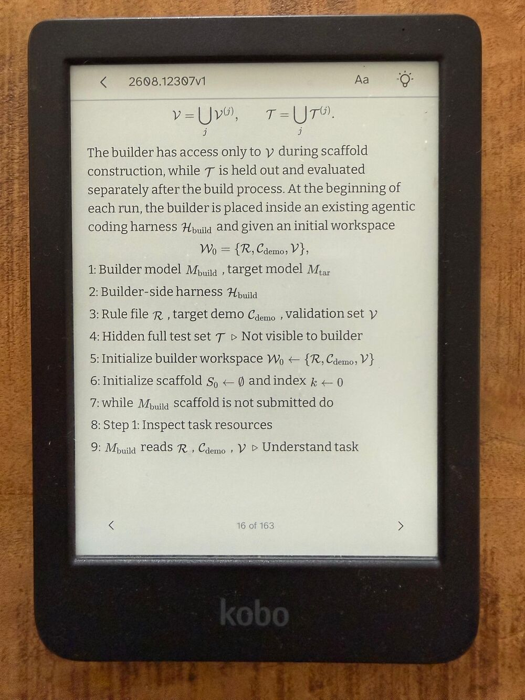
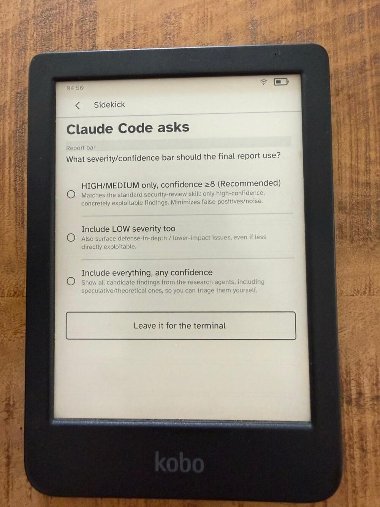
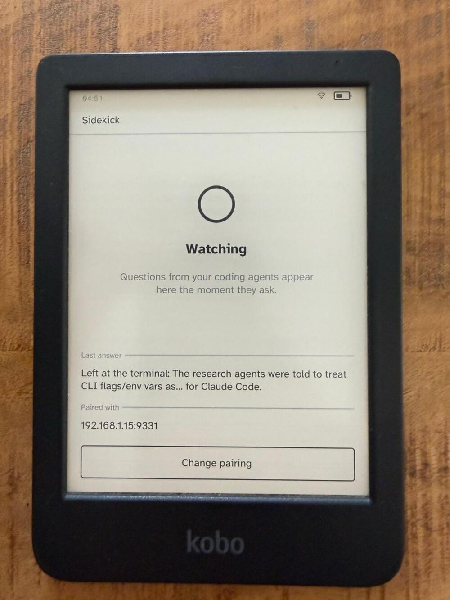
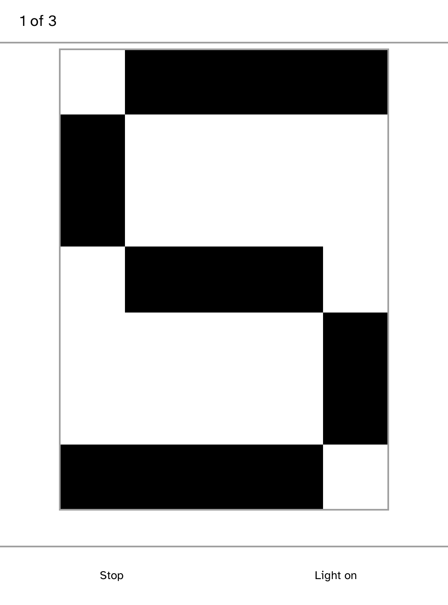

Cobalt is an open-source application platform for Kobo e-readers: a launcher, a signed App Store, a Rust SDK, and a runtime that keeps every app in its own unprivileged process.
Install it once over USB. Every app after that installs, updates and removes on the reader itself, over Wi-Fi. A reboot returns to the stock Kobo reader.


Every app is a static ARM binary running as its own unprivileged process on stock hardware. The App Store installs, updates and removes them over Wi-Fi, with signatures verified before anything launches.
These are photographs of the device, not simulator captures. The arXiv app reads the HTML rendering arXiv publishes for every paper since December 2023: abstracts, sections, math and result tables, paginated for the panel.





Apps
Every screenshot below is a capture from a Kobo Clara BW. Store apps version independently of the platform; the rest ship with the platform install.
Store-only by design: installing it proves delivery of an app the USB package never contained.

Sends a typed message in Morse on the front light, one letter across the whole panel.
The SDK
Implement KoboApp, describe screens declaratively, and the runtime handles layout, e-ink refresh planning, Back navigation and lifecycle.
Apps don't open device resources; they ask. Network, storage, audio, frontlight and Wi-Fi are capability-gated, and a refusal comes back as a value the app can handle.
kobo new my-app
cd my-app
kobo devuse kobo_sdk::{
ActionId, Context, KoboApp, ScreenBuilder,
};
#[derive(Default)]
struct Hello { taps: u32 }
impl KoboApp for Hello {
fn on_start(&mut self, ctx: &mut Context) {
self.show(ctx);
}
fn on_action(
&mut self, ctx: &mut Context, a: ActionId,
) {
if a == kobo_sdk::action_id("tap") {
self.taps += 1;
}
self.show(ctx);
}
}
impl Hello {
fn show(&self, ctx: &mut Context) {
let screen = ScreenBuilder::new("hello")
.top_bar("Hello")
.heading(format!("{} taps", self.taps))
.button("tap", "Tap me")
.build();
ctx.set_screen(screen);
}
}
fn main() {
let app = Hello::default();
let _ = kobo_sdk::run("hello", app);
}The Store
Store reads a signed catalog from a fixed GitHub release. Each package holds one ARM executable and a signed canonical manifest. The runtime verifies the catalog, the package, the installed manifest and the binary before an app runs.
App releases are independent of platform releases: merging an app PR builds it for ARM, signs it, and updates the catalog. No Cobalt version bump, no reinstall. The app simply appears in Store.
The Cobalt platform itself also updates over Wi-Fi, through Settings, on a channel separate from the app catalog. The USB cable is only ever needed once.
Install and catalog transactions are recovery-safe; an interrupted update leaves the reader with the version it had.

Install
git clone https://github.com/BandarLabs/Cobalt.git
cd Cobalt
rustup target add armv7-unknown-linux-musleabihf
cargo run -p kobo-cli -- setupThe complete walkthrough, including recovery steps, is in docs/INSTALL.md.
Contributing
App contributions are regular pull requests. If it runs on your device and the PR shows it running, it gets merged and published.
apps/<app-id>/ and register it in apps/catalog.json.Own a different Kobo model? Porting is welcome too; open an issue first so the device profile can be agreed. Full details in docs/CONTRIBUTING_APPS.md.
Safety
Cobalt does not replace Kobo's boot chain. Device writes are gated on an exact hardware and firmware match, and a reboot returns to the stock reader. The first installation does modify files on the user storage partition, and it is provided without warranty.
Only the Clara BW profile has been hardware-tested. Don't install on another model until it has a reviewed, hardware-tested profile. Cobalt is an independent project, not affiliated with Rakuten Kobo.